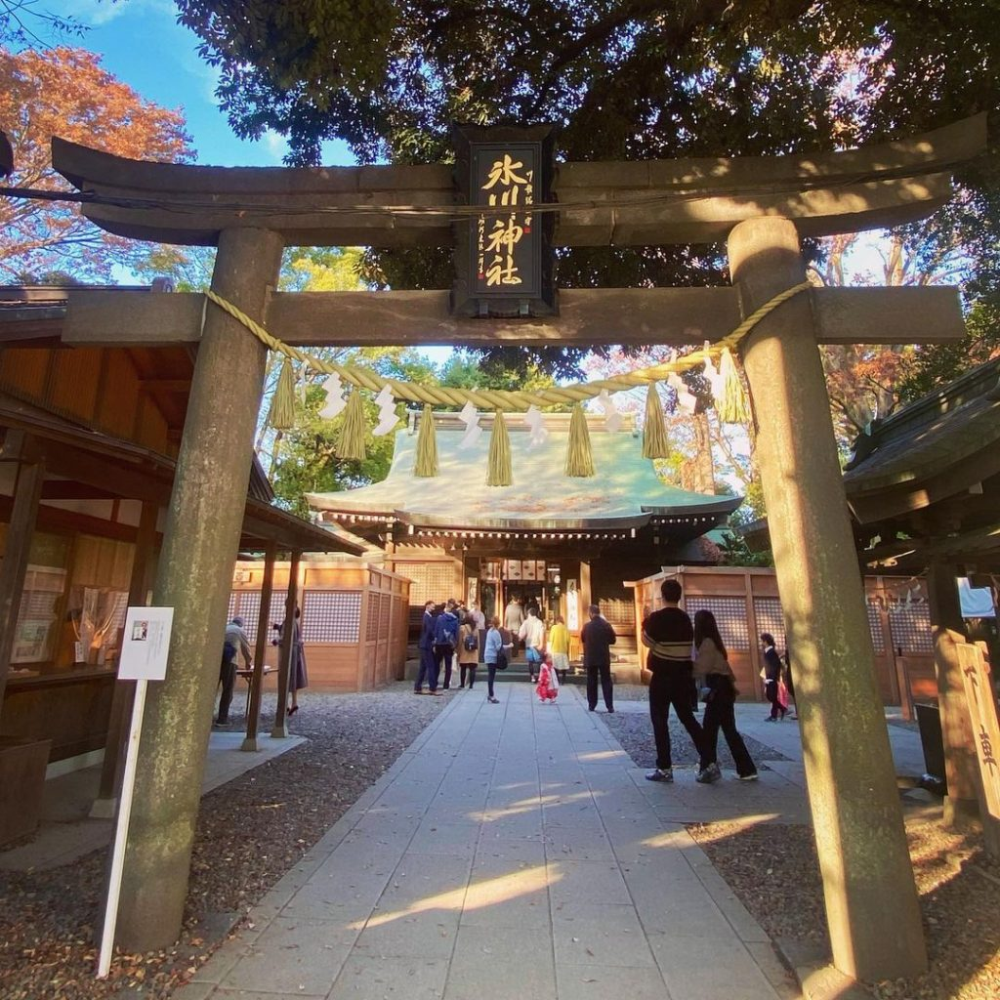
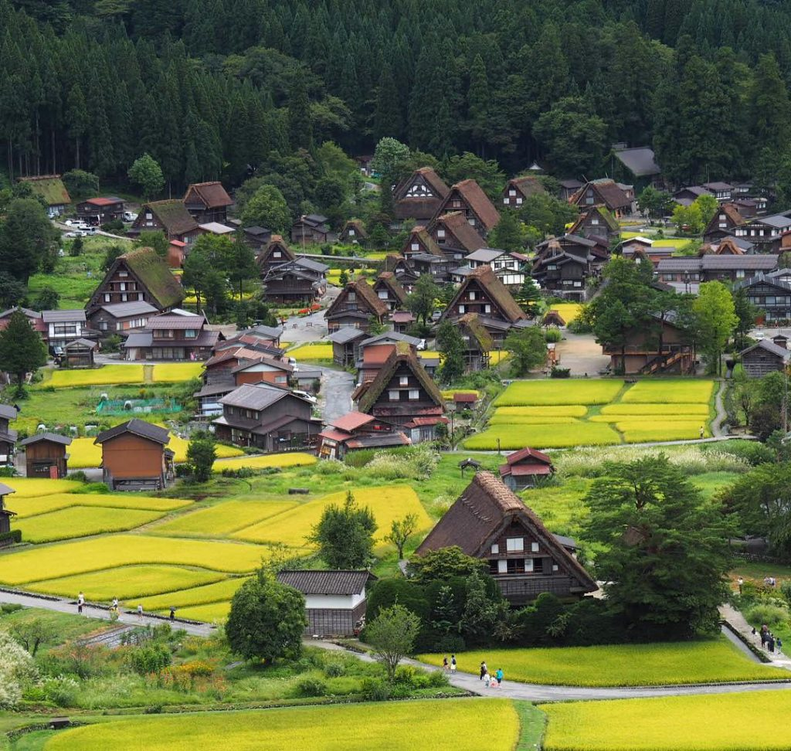

Scenery of Japan Slideshow
Micspett@uat.edu
University of Advancing Technology
CSC256 Designing Website Interfaces I
These are some of my personal favorite sceneries of Japan, please go through the slides and enjoy the view!
 
❮
❯